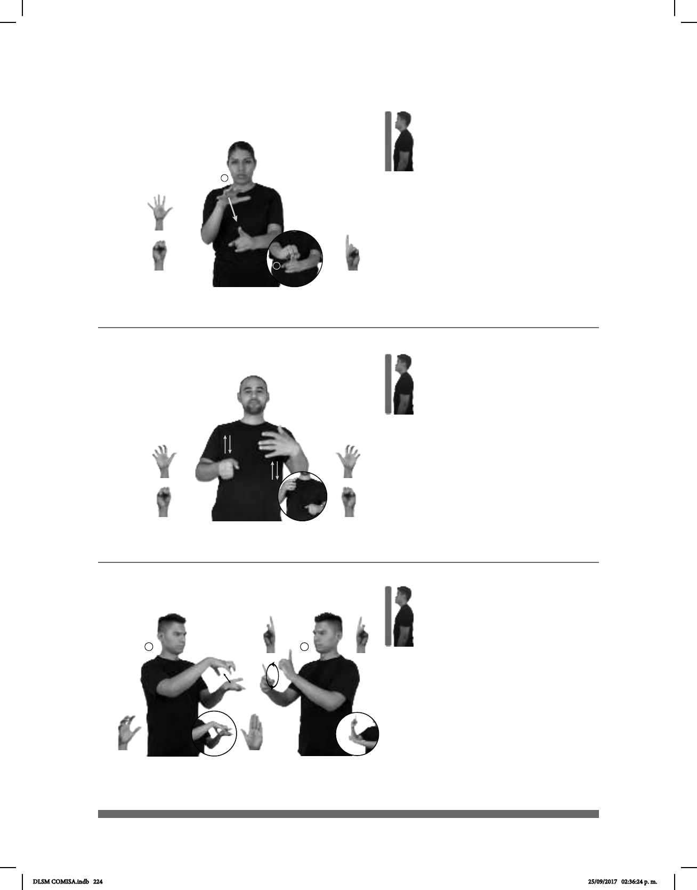

224
1
2
Seña: SB
MD seña que pasa
de 5.1 a S.1, MB 1.1
MD palma hacia abajo.
MB palma hacia la derecha.
La MD inicia a la altura
del pecho y termina sobre MB. MB a
la altura del abdomen.
MD recto mientras los
dedos se cierran contra la palma.
sust. f. Fin a que se
dirigen las acciones o deseos de
alguien.
Seña: SB
MD y MB seña que
pasa de 5.18 a S.1
MD palma oblicua
hacia la izquierda y hacia adentro. MB
palma oblicua hacia la derecha y hacia
adentro.
MD y MB del pecho a la
cintura.
MD y MB recto
alternada y repetidamente.
1. v. tr. Extraer la leche de
la ubre de las vacas y otros animales
haciendo presión con las manos o por
medio de una máquina. 2. sust. f.
Sustancia láctea producto de un proceso
interno de los hembras mamíferos.
(5-G 94)
(5-G 95) Ordeñar
1
2
MUCHO ESFUERZO pro-TÚ DEBER META pro-TÚ ALCANZAR
Debes esforzarte mucho para alcanzar tu meta.
DIARIO RANCHO pos-MI TÍO+MUJER VACAS
área
ORDEÑAR
En el rancho de mi tía, diario ordeñan a las vacas.
1
2
Seña: SC: I. y II. SB
I. MD 5.16, MB B-P.2; II.
MD y MB D.2
I. MD palma hacia abajo. MB
palma hacia arriba; II. MD palma hacia la
izquierda MB palma hacia la derecha.
I. A la altura del pecho. MD
sobre MB; II. MD y MB a la altura del
pecho.
I. La MD golpea la MB en
línea recta repetidamente; II. La MD y la
MB se mueven formando círculos hacia
enfrente alternadamente.
Recinto de la Ciudad de
México, actualmente usado para realizar
eventos como conciertos, ferias comerciales
y exposiciones.
(5-G 96)
CADA ÚLTIMA SEMANA LUGAR PALACIO-DEPORTES dm-CARLOS dm-DAVID pro-ELLOS-DE-DOS JUGAR
DLSM COMISA.indb 224 25/09/2017 02:36:24 p. m.